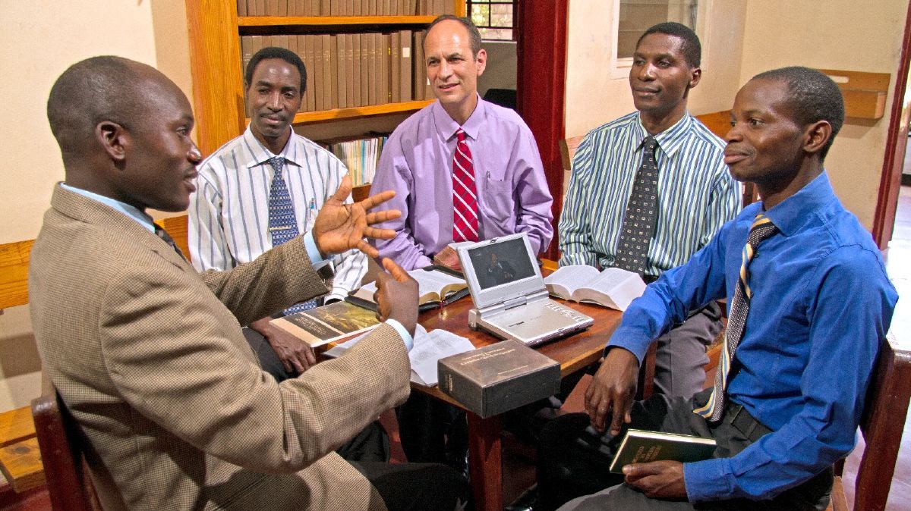

É com alegria que compartilhamos informações sobre a tão esperada visita do casal Monteiro a sua congregação. Queremos que saibam o quanto amamos a cada um de vocês.
A carta com os lembretes irá fornecer a você as instruções necessárias para serem colocadas no quadro informativo da congregação.
"Quando se aproxima a data da visita do superintendente de circuito, a congregação começa os preparativos. Primeiramente, a carta com os lembretes da visita é baixada e lida para a congregação. Em seguida, ela é afixada no quadro informativo."
Nestes últimos dias, quando nos reunimos regularmente, recebemos mais encorajamento (od 7:3)
🌐 Programação das Reuniões
🌐 Programação das Reuniões Online
"Desejamos estar com vocês, nossos queridos irmãos, nas reuniões e no ministério durante a semana da visita. É sempre um prazer estarmos juntos!" (Sal 133:1)
"Mas que todas as coisas ocorram com decência e ordem" (1Cor 14:40).
🌐 Programação de Estudos e Refeições
Um dos objetivos da visita do superintendente de circuito é incentivar uma participação ativa no ministério e dar sugestões práticas. É possível que muitos na congregação consigam ajustar sua programação para participar ainda mais no ministério, seja servindo como pioneiros auxiliares no mês da visita, seja apoiando ao máximo o serviço de campo naquela semana.
Quem quiser trabalhar com ele ou com sua esposa pode combinar isso com antecedência. Pode ser muito proveitoso levar o superintendente de circuito ou sua esposa para acompanhá-lo em estudos ou revisitas. O esforço adicional que você fizer para apoiar plenamente esse aspecto da semana da visita será muito apreciado. — Pro. 27:17. (od 5:48)
A cada seis meses, aproximadamente o casal de viajante visita a sua congregação, para ajudar a se preparar fizemos um itinetário provisório.
LEMBRAMOS que a data oficial sempre será a do formulário S-302 estará no quadro informativo da congregação.